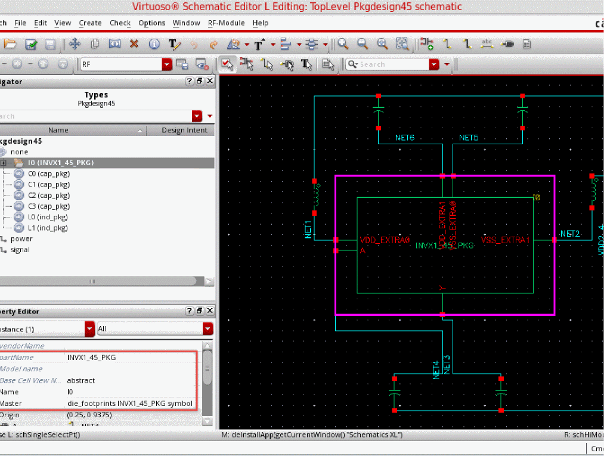

4
Creating a Package Schematic
The package schematic contains the symbols of SMDs from SiP and the die symbol obtained from die export. It can contain more components, such as LGA, embedded components, and Transmission Lines (TLines). The package schematic contains the IC and package portions of the design that are represented, designed, and verified within a single environment. It eliminates the tedious and error prone process of maintaining multiple schematic databases. It lets you Edit-in-Concert the package and IC in the design flow. For example, you can explore the possibility of implementing a selected passive component of the IC, verify the performance by running a simulation, and decide about how best to implement the component. In some cases, a network of passive components may be better implemented across the boundary of the die placed on a package. This is true for RF modules, where the optimum design of filtering and matching networks often leverages components on both the die and in the package substrate.
The chapter includes the following sections:
Instantiating SMD Instances
To ensure that the top-level package design is derived from a package technology, create a package schematic inside a library where the technology library has the package, module, or board fabric. For example, a library created by importing a design from Allegro.
SMD components are found in the smdLib, a library created by importing SMD components from a CSV file. It is designed to be used in conjunction with a part table file (*.ptf) that lists the available components and their associated electrical characteristics and other useful information provided by the component manufacturer. The Select Parts button in the Edit Object Properties form displays the most useful electrical information of each individual SMD footprints. For example, for an inductor, it displays the inductance, Q or quality factor, self-resonance frequency, and tolerance. In addition, an associated S-parameter model file to be used for simulation is mentioned. Models are obtained from the manufacturer and their names are stored in the PTF.
The Physical Parts Filter dialog box displays the information from the Physical Part Table file (.ptf file). Each row in the Physical Part Filter dialog box corresponds to a physical component associated with the logical part you have selected.
In the Filters row, you can filter the available part choices based on specific criteria. For example, if you want to view only the physical parts of the package, do the following:
-
Click Filter.
The Filter Browser dialog box appears. The browser displays all the property names associated with the selected part name. - Select the property for which you want to specify the filter.
- Specify the filter value at the bottom of the Filter Browser dialog box.
- Click Apply.
- Similarly, repeat steps b and c for other properties.
- Click OK.
-
Click Filter.
Instantiating BGA Instances
Ball grid array (BGA) instances are the types of IC packages. Select the Add Symbol cellView for new BGA Components for creating the symbol while importing from Allegro. It creates a schematic symbol of the BGA, which can be instantiated in the schematic.
Instantiating IC Instances
Update the package schematic in the package library by instantiating the die footprint generated while exporting the die. Refer to the following steps:
- Create a new cellview in the package library.
-
Instantiate the die symbol by using the Add Instance form.
 - Create connectivity for the instance.
- Check and Save the package schematic.
Creating TLines Instances
The Virtuoso RF Solution provides a library that contains the symbol view, simulation view, and OA layout view for TLines. You can instantiate the symbol views and capture connectivity in the package schematic. Tline components are derived from rfTlineLib, which is a library of wideband-accurate transmission line models in multi-conductor microstrip and stripline configurations.
TLine instances can be added to the package schematic by using the RF toolbar available in the RF workspace. The RF toolbar lets you access the TLine components that can be placed in the schematic.
Each button on the toolbar opens the Add Instance form to enable you place the components on the canvas. All TLine components in a schematic can be found by using the Search toolbar or assistant with the keyword “tlines”. This is useful for cross selecting multiple instances to compare width and length parameters in the Property Editor.
Based on the frequency-dependent per-unit-length parameters calculated by a 2D quasi-static electromagnetic solver, the models are integrated in Virtuoso Analog Design Environment and accessible from standalone Spectre netlists. For details, refer to the following:
rfTlineLib includes an interactive graphical stack-up editor for storing the substrate geometry and material properties. The TLine topologies that are used as TILPs in the Virtuoso RF Solution are the following:
A typical flow of instantiating TLines instances is shown here:
- Instantiate the TLines TILP from rfTlineLib.The library contains the symbol, simulation, and OA layout view.
- Specifies TLine parameters, such as length and width.
- Simulate the package schematic using the Tline simulation model.
- Generate the package layout by using Layout EXL.
Return to top